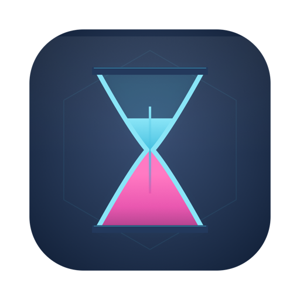
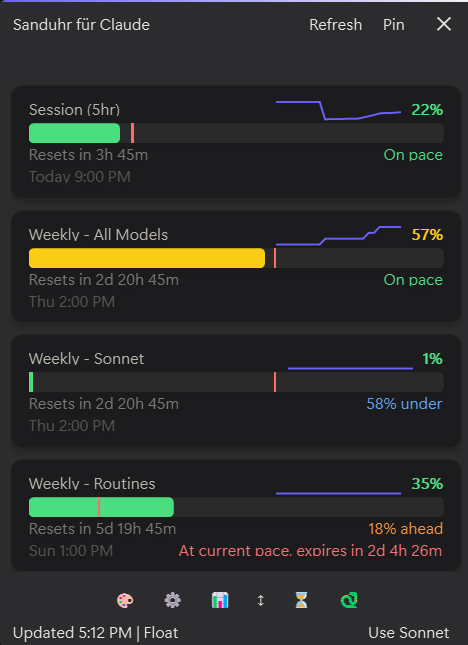
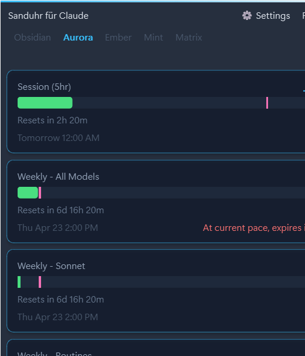

macOS
Native SwiftUI. Developer ID signed + Apple-notarized, so no Gatekeeper warnings. Sparkle auto-updates.
- NSVisualEffectView vibrancy
- Keychain credentials
- Requires macOS 11 (Big Sur) or newer

Native desktop widget that turns your claude.ai subscription usage into something you can actually pace yourself by.
Burn-rate projection, pace markers, sparkline trends, and five hand-tuned glass themes. Mac + Windows. No telemetry.

Three builds. Pick the one that matches your OS.
Native SwiftUI. Developer ID signed + Apple-notarized, so no Gatekeeper warnings. Sparkle auto-updates.
Native PySide6 with real Win11 Mica glass. Windows Credential Manager for the session cookie.
Single-file tkinter app with auto-installing cloudscraper dep. Runs on Mac, Windows, and Linux. For folks who prefer running from source.
python sanduhr.pySanduhr does the pacing math so you don't have to.
"Hits 100% in ~4h 22m at current pace" warns you before you run dry, not after.
Colored ticks show where "on pace" is right now — pace by eye, not by math.
Per-tier velocity trends so you can see whether you're accelerating or cooling off.
Obsidian, Aurora, Ember, Mint, Matrix — plus unlimited user-authored JSON themes via Settings or a drop-in file.
Hand any chat agent a reference image or vibe description. Get back a drop-in theme JSON.
Win11 Mica glass. macOS NSVisualEffectView. No Electron. No WebView.
Your Claude Fable 5 allowance, tracked automatically. When Anthropic adds a limit for any new model, its meter just appears — no update needed.
Local Claude Code logs become a dashboard: sessions by project with agent roll-up, weekly trends, a clickable calendar, sent/received splits, CSV export — and an opt-in vault that outlives the CLI's 30-day log cleanup.
A toast and a soft procedural chime when a pool crosses your warn or urgent line. Per-model meters stay politely silent by default.
A taste of what ships in the box.



No telemetry. No analytics. No crash reporter. No usage metrics. 626 Labs has no server and no pipeline to receive data from Sanduhr — even in principle.
The app's only outbound network call is HTTPS to claude.ai, using your own session cookie, to read your own usage numbers. Your cookie lives in your OS's native secure credential store (Keychain on macOS, Credential Manager on Windows) and is wiped on uninstall.
Looking for the full pitch with all the screenshots, themes gallery, and docs?
Open the full landing page →